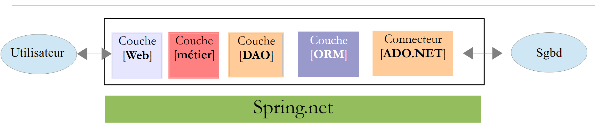

1. مقدمة
يتوفر ملف PDF لهذا المستند |HERE|.
أمثلة هذا المستند متاحة |HERE|.
نقترح هنا تقديم المفاهيم المهمة لـ ASP.NET MVC، وهو إطار عمل ويب، باستخدام أمثلة.NET الذي يوفر إطارًا لتطوير تطبيقات الويب وفقًا لنموذج MVC (النموذج – العرض – وحدة التحكم).
لا يتطلب فهم الأمثلة الواردة في هذا المستند سوى القليل من المتطلبات المسبقة. لا يلزم سوى معرفة أساسية بلغة C#. ويمكن العثور على هذه المعرفة في مستند "مقدمة إلى لغة C#" في URL [تعلم لغة C# الإصدار 3.0 باستخدام Framework .NET 3.5 (2008)]. يتم تقديم دراسة حالة لتطبيق المعرفة المكتسبة عمليًا في ASP.NET MVC. وهي تستخدم ORM (Object Relational Mapper) Entity Framework. يتم عرض هذا ORM في المستند "مقدمة إلى Entity Framework 5 Code First" المتاح في URL [مقدمة من خلال الأمثلة إلى Entity Framework 5 Code First (2012)].
تتوفر الأمثلة المختلفة الواردة في هذا المستند في |URL |HERE في شكل ملف zip قابل للتنزيل.
هذا المستند غير مكتمل من نواحٍ عديدة. لمزيد من التعمق في ASP.NET MVC، يمكن استخدام المراجع التالية:
- [ref1]: كتاب "Pro ASP.NET MVC 4" الذي كتبه آدم فريمان ونشرته دار Apress. إنه كتاب ممتاز. لو كان متاحًا مجانًا باللغة الفرنسية على الإنترنت، لما كان هناك داعٍ لوجود هذا المستند. أوصي كل من يستطيع أن يتعلم ASP.NET MVC باستخدام هذا الكتاب. تتوفر أكواد المصدر الخاصة بأمثلة الكتاب مجانًا على URL [http://www.apress.com/9781430242369]؛
- [ref2]: موقع إطار العمل [http://www.asp.net/mvc]. ستجدون فيه كل المواد اللازمة للتعلم الذاتي. تتوفر نسخة باللغة الفرنسية على URL [http://dotnet.developpez.com/mvc/ ]؛
- موقع [developpez.com] المخصص لـ ASP.NET [http://dotnet.developpez.com/aspnet/ ].
تمت كتابة الوثيقة بطريقة تسمح بقراءتها دون الحاجة إلى جهاز كمبيوتر. لذلك، تم تضمين العديد من لقطات الشاشة.
1.1. مكانة ASP.NET MVC في تطبيق ويب
أولاً، لنحدد مكان ASP.NET MVC في تطوير تطبيق ويب. في أغلب الأحيان، سيتم بناء هذا التطبيق على بنية متعددة الطبقات مثل التالية:
 |
- الطبقة [Web] هي الطبقة التي تتعامل مع مستخدم تطبيق الويب. يتفاعل المستخدم مع تطبيق الويب من خلال صفحات الويب التي يتم عرضها بواسطة متصفح. يوجد في هذه الطبقة ASP.NET MVC وفي هذه الطبقة فقط؛
- تنفذ الطبقة [métier] قواعد إدارة التطبيق، مثل حساب الراتب أو الفاتورة. تستخدم هذه الطبقة البيانات الواردة من المستخدم عبر الطبقة [Web] ومن SGBD عبر الطبقة [DAO]؛
- تتولى الطبقة [DAO] (كائنات الوصول إلى البيانات)، والطبقة [ORM] (مُخطِط العلاقات بين الكائنات)، والموصل ADO.NET إدارة الوصول إلى بيانات الطبقة SGBD. تشكل الطبقة [ORM] جسرًا بين الكائنات التي تعالجها الطبقة [DAO] والصفوف والأعمدة في جداول قاعدة البيانات العلائقية. يتم استخدام طبقتين من ORM بشكل شائع في عالم .NET، NHibernate (http://sourceforge.net/projects/nhibernate/ ) و Entity Framework (http://msdn.microsoft.com/en-us/data/ef.aspx )؛
- يمكن تحقيق تكامل الطبقات بواسطة حاوية حقن التبعيات (Dependency Injection Container) مثل Spring (http://www.springframework.net/ )؛
معظم الأمثلة الواردة أدناه ستستخدم طبقة واحدة فقط، وهي الطبقة [Web]:
 |
ومع ذلك، ستنتهي هذه الوثيقة بإنشاء تطبيق ويب متعدد الطبقات:
 |
1.2. نموذج تطوير ASP.NET MVC
ASP.NET MVC ينفذ نموذج الهندسة المعمارية المسمى MVC (النموذج – العرض – وحدة التحكم) بالطريقة التالية:
 |
تتم معالجة طلب العميل على النحو التالي:
- الطلب - تكون طلبات URL بالصيغة http://machine:port/contexte/Controlleur/Action/param1/param2/....?p1=v1&p2=v2&... يستخدم [Front Controller] ملف تكوين لتوجيه الطلب إلى وحدة التحكم الصحيحة والإجراء الصحيح داخل وحدة التحكم هذه. وللقيام بذلك، يستخدم المسار [Controlleur/Action] من URL. أما باقي أجزاء URL و [/param1/param2/...] فهي معلمات اختيارية سيتم تمريرها إلى الإجراء. الحرف C في MVC هو هنا السلسلة [Front Controller, Contrôleur, Action]. إذا لم يؤد المسار [Controlleur/Action] إلى وحدة تحكم موجودة أو إجراء موجود، فسيرد الخادم على الويب بأن URL المطلوب لم يتم العثور عليه.
- المعالجة
- يمكن للإجراء المختار استخدام المعلمات parami التي أرسلها إليه [Front Controller]. ويمكن أن تأتي هذه المعلمات من عدة مصادر:
- مسار [/param1/param2/...] الخاص بـ URL،
- من المعلمات [p1=v1&p2=v2] الخاصة بـ URL,
- من المعلمات التي أرسلها المتصفح مع طلبه؛
- في معالجة طلب المستخدم، قد تحتاج العملية إلى الطبقة [métier] [2b]. بمجرد معالجة طلب العميل، يمكن أن يستدعي هذا الطلب استجابات متنوعة. ومن الأمثلة النموذجية على ذلك:
- صفحة خطأ إذا تعذر معالجة الطلب بشكل صحيح
- صفحة تأكيد في الحالات الأخرى
- تطلب الإجراء عرض طريقة عرض معينة [3]. ستعرض طريقة العرض هذه البيانات التي نسميها نموذج طريقة العرض. هذا هو M في MVC. ستقوم الإجراء بإنشاء هذا النموذج M [2c] وتطلب عرض طريقة عرض V [3]؛
- الاستجابة - تستخدم طريقة العرض V المختارة النموذج M الذي أنشأته الإجراء لتهيئة الأجزاء الديناميكية من الاستجابة HTML التي يجب أن ترسلها إلى العميل ثم ترسل هذه الاستجابة.
الآن، دعونا نوضح العلاقة بين بنية الويب MVC وبنية الطبقات. وفقًا للتعريف الذي نعطيه للنموذج، فإن هذين المفهومين مرتبطان أو غير مرتبطين. لنأخذ تطبيق ويب ASP.NET MVC أحادي الطبقة:
 |
إذا قمنا بتنفيذ الطبقة [Web] مع ASP.NET MVC، فسنحصل على بنية ويب MVC ولكن ليس بنية متعددة الطبقات. هنا، ستتولى الطبقة [Web] كل شيء: العرض، والوظيفة، والوصول إلى البيانات. هذه هي الإجراءات التي ستقوم بهذا العمل.
الآن، لننظر إلى بنية ويب متعددة الطبقات:
 |
يمكن تنفيذ الطبقة [Web] بدون إطار عمل وبدون اتباع النموذج MVC. لدينا إذن بنية متعددة الطبقات، لكن الطبقة الويب لا تنفذ النموذج MVC.
وبالتالي، يمكن تنفيذ الطبقة [Web] المذكورة أعلاهمع ASP.NET و MVC، وبذلك نحصل على بنية متعددة الطبقات مع طبقة [Web] من النوع MVC. وبعد ذلك، يمكن استبدال هذه الطبقة ASP.NET MVC بطبقة ASP.NET تقليدية (WebForms) مع الحفاظ على بقية (المجال، DAO، ORM) كما هو. نحصل عندئذٍ على بنية طبقات تحتوي على طبقة [Web] التي لم تعد من النوع MVC.
في MVC، ذكرنا أن النموذج M هو نموذج العرض V، c.a.d. مجموعة البيانات المعروضة بواسطة العرض V. يتم تقديم تعريف آخر للنموذج M لـ MVC:
 |
يعتبر العديد من المؤلفين أن ما يقع على يمين الطبقة [Web] يشكل النموذج M لـ MVC. لتجنب الغموض، يمكننا التحدث عن:
- نموذج المجال عند الإشارة إلى كل ما يقع على يمين الطبقة [Web]
- نموذج العرض عند الإشارة إلى البيانات المعروضة بواسطة عرض V
فيما يلي، سيشير مصطلح "نموذج M" حصريًا إلى نموذج عرض V.
1.3. الأدوات المستخدمة
فيما يلي، نستخدم (سبتمبر 2013) الإصدارات Express من Visual Studio 2012:
- [http://www.microsoft.com/visualstudio/fra/products/visual-studio-express-for-windows-desktop ] لتطبيقات سطح المكتب؛
- [http://www.microsoft.com/visualstudio/fra/products/visual-studio-express-for-Web ] لتطبيقات الويب.
لتثبيت أحدث إصدارات هذه المنتجات، يمكن استخدام منتج [Web Platform Installer] من Microsoft (http://www.microsoft.com/Web/downloads/platform.aspx ).
بالإضافة إلى ذلك، سنستخدم متصفح Chrome من Google (http://www.google.fr/intl/fr/chrome/browser/). سنضيف إليه الملحق [Advanced Rest Client] . يمكننا القيام بذلك على النحو التالي:
- الذهاب إلى موقع [Google Web store] (https://chrome.google.com/webstore) باستخدام متصفح Chrome؛
- ابحث عن التطبيق [Advanced Rest Client]:
 |
- التطبيق متاح للتنزيل:
 |
- للحصول عليه، سيتعين عليك إنشاء حساب Google. يطلب [Google Web Store] بعد ذلك تأكيدًا [1]:
 |
- في [2]، الملحق المضاف متاح في الخيار [Applications] [3]. يتم عرض هذا الخيار في كل علامة تبويب جديدة تقوم بإنشائها (CTRL-T) في المتصفح.
1.4. الأمثلة
ستقتصر معظم أمثلة التعلم على طبقة الويب فقط:
 |
بمجرد الانتهاء من هذا الدرس، سنقدم تطبيق ويب متعدد الطبقات:
 |